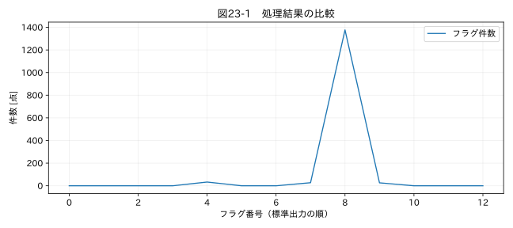

第VI部 実務の自動化 / 第23章
この章の節
データ品質レポートを自動生成する
学習目標
件数、警告、候補一覧、前後比較、適用ルールをまとめたレポートを作る。表示用の抜粋と全件データを分け、未評価や処理失敗が見えるようにする。
23.1 レポートの読み手を決める
解析者は詳細な数値を知りたいが、設計レビューの参加者は「この結果をどこまで信頼できるか」を知りたい。両者のために、最初に対象と判定状態、次に品質指標と主な警告、さらに候補一覧と図、最後に設定と追跡情報を置く。
本書のレポートは製品合否判定を行わない。REVIEW_REQUIRED は要確認のデータがある状態、NO_RULE_VIOLATION_DETECTED は設定規則で違反候補を検出しなかった状態である。測定の妥当性や校正の適切さまで自動判定したとは表示しない。
23.2 必要な情報
| 区分 | 載せる内容 | 誤解を避ける工夫 |
|---|---|---|
| 対象 | 入力ファイル、シート、行数、期間 | 処理対象外を明示 |
| 品質 | 欠損、変換不能、時刻異常、候補数 | 分母と未評価範囲を併記 |
| 変更 | 補間数、変更位置、前後差 | 検出のみと修正を区別 |
| 図 | 原観測と解析値、候補位置 | 単位、時刻または記録順を明示 |
| 根拠 | 設定、版、環境、原本ハッシュ | 再実行できる形で残す |
候補件数が多い場合、HTMLに全行を埋め込むと読みにくくなる。本アプリは候補一覧を先頭200行に制限し、全件はExcelへ出力する。200行しか異常がないという意味ではないため、表示上限を明記する。
23.3 図の軸と欠損
時刻が逆転しているデータを時間軸へ折れ線で描くと、線が戻って読みにくい。本アプリの品質確認図は取得順のレコード番号を横軸に使う。正式な物理現象の解析図には、検査済みの時間軸を別途用いる。横軸が何を表すかを省略しない。
欠損の前後を自動的につないで描くと、未知の区間を観測済みのように見せる。NaNはそのまま線を切り、補間した点はマーカーで示す。大きなファイルを描くために単純間引きすると、狭いピークが消えることがある。表示点数を制限するなら、区間の最小最大などピークを保持する表示用集約と、その方法の明示が必要である。
23.4 Excel出力の意味
clean_data.xlsx には原値、数値化値、解析値、由来、単位を並べる。quality_flags.xlsx は同じsource_file、sheet、source_rowで対応付けられる。タイムゾーン付き日時はExcelのネイティブ日時として保持しにくいため、本アプリはUTCオフセットを含むISO文字列として出力する。Excel上で日時計算する場合は、UTCであることを明示した別列へ変換する。
文字列が = で始まるとExcelが数式として解釈することがある。原文字列を保存するときは文字列セルとして書き出し、勝手に式を実行させない。本書の出力関数にはこの処理と自動テストを含めた。
関連する詳細実験は実践補講に掲載。入力形式・同期・補間・校正・多変量・チャンク境界を扱う。
実行するコードと結果
run.py · 共通処理の全ソース
教材フォルダで python examples/chapter23/run.py を実行。以下は省略のないスクリプト。共通モジュールは教材一式に含む。
from pathlib import Path
import sys
ROOT=Path(__file__).resolve().parents[2]
sys.path.insert(0,str(ROOT))
sys.path.insert(0,str(ROOT/'examples'))
import numpy as np
import pandas as pd
from common import load,truth,seconds,plot
from tsclean.core import numeric,timestamps,time_flags,hampel,freeze_candidates,interpolate_short,compare
import yaml,json
from tsclean.app import process_frame
c=yaml.safe_load((ROOT/'configs/01_temperature.yaml').read_text(encoding='utf-8'))
df=load('01_temperature');out,flags,logs,summary=process_frame(df,c)
print(json.dumps(summary,ensure_ascii=False,indent=2,default=str))
counts=summary['flag_counts'];names=list(counts);v=list(counts.values())
plot(23,np.arange(len(v)),{'フラグ件数':v},'件数 [点]',xlabel='フラグ番号（標準出力の順）')
検証環境での実行結果を開く
{
"status": "REVIEW_REQUIRED",
"rows": 1440,
"warnings": [],
"statistics": {
"value": {
"before": {
"n": 1407,
"mean": 59.81230601901209,
"std_ddof1": 3.053879973843546,
"min": 24.98781757,
"max": 61.33584856
},
"after": {
"n": 1407,
"mean": 59.81230601901209,
"std_ddof1": 3.053879973843546,
"min": 24.98781757,
"max": 61.33584856
},
"paired_n": 1407,
"paired_max_abs_change": 0.0,
"filled_n": 0
}
},
"quality_metrics": {
"value": {
"denominator_received_rows": 1440,
"missing_fraction_received_rows": 0.022916666666666665,
"invalid_fraction_received_rows": 0.0,
"hampel_assessed_n": 1377,
"hampel_unassessed_n": 63,
"candidate_fraction_assessed": 0.0196078431372549
}
},
"flag_counts": {
"time_invalid": 0,
"time_duplicate": 0,
"time_reverse": 0,
"interval_irregular": 0,
"value__missing": 33,
"value__invalid_token": 0,
"value__bounds_candidate": 0,
"value__outlier_candidate": 27,
"value__hampel_assessed": 1377,
"value__spike_candidate": 26,
"value__freeze_candidate": 0,
"value__saturation_candidate": 0,
"value__interpolated": 0
}
}

23.5 HTMLを安全に組み立てる
ファイル名や元セルに < や & が含まれていても、HTMLの構造として解釈しないようエスケープする。Pythonでは html.escape、pandasの表出力では escape=True を使う。試験名の文字列をそのままscriptタグの近くへ埋め込まない。
本アプリのレポートは外部の画像、CSS、JavaScriptを読み込まず、SVGを内部へ埋め込む。受け取った人がオフラインで開ける。巨大な図でレポートが重くなった場合も、データを削って軽くする前に、表示方法と全件の保存先を検討する。
23.6 レポート自体を検査する
元の行数と出力行数、フラグ件数、補間件数、候補一覧の表示上限を照合する。全欠損列なら平均を空欄または未評価にし、正常と表示しない。あるファイルが処理失敗した場合、レポートが作られていないこともバッチ一覧で分かるようにする。
図23-1のフラグ番号は、標準出力に列挙した順番に対応する。出版用の比較図と、実行時に任意列数へ対応する汎用レポートでは見せ方が異なる。読み手が元の候補行へ戻れることを優先する。
演習
基礎演習
温度教材のレポート集計でmissingが33であることを確認する。
応用演習
全欠損の列を入力し、警告と判定がどう変わるかを確認する。
実務演習
HTMLの一覧に200行あるため、「異常は200件」と報告された。誤解を防ぐ表示を提案する。
演習解答・解説を表示する
基礎：missingは33。候補フラグは重複し得るので合計を異常行数としない。
応用：NO_VALID_VALUESの警告が付き、REVIEW_REQUIREDになる。Hampelで候補が出ないことを正常と解釈しない。
実務：「候補全件数X、表示200件、残りはquality_flags.xlsx」と明示する。表の省略を欠落と誤認しないよう、全件へのリンクを近くに置く。
章末まとめ
レポートは処理の説明書である。結果の読みやすさとともに、限界、未評価、元データへの戻り方を提供する。